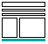
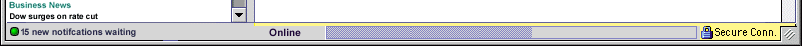
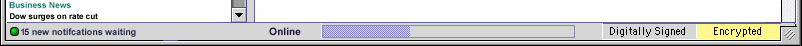

| Communicator Seamonkey cross components |
UI Specification
|
|
Communicator status bar send feedback to the component specific newsgroup |
Last
Modification: 11 Mar 1999
|
| Author German
W. Bauer Initial Creation Date: 31 January 1998 |
Status: Specification based on feedback from Navigator and Messenger folks as well as Security Engineering (NS Server group). |
Quicklinks:
Design Overview |
Feature Team
|
Older spec, will be updated |
Summary/Overview

The status bar will be the place in Communicator Seamonkey where users look for overall status of their online experience such as download progress, on-offline status, security information for the current connection (in Navigator and in Messenger if we support SSL mail there), but also message specific information for MessengerGoals
Give end-users one place where to look for overall status. Use the same locations throughout all applications for the specific items in the status bar especially for items used across componentsTarget Audience
The target user for this feature are Communicator Seamonkey users as described in the Seamonkey PRD
User Tasks
Fundamental Tasks Intermediate Tasks Advanced Tasks Recognize notifcations waiting and be able to act on these See whether on or offline Change from online to offline and vv Recognize secure connection in Navigator Recognize download in progress Recognize whether mail messages have been encrypted or digitally signed Recognize how long download will take (rate of progress) Sign/encrypt mail messages Get more info on security
Read exact kB value of downloaded items so far as well as still to download Find about xxx-bit security being used
Design
Cheatsheet
Default status bar in Navigator

Default status bar in Messenger

Design
Details
Overview of components in the status bar
|
|
|
|
|
|
|
|
| Component |
|
|
|
(Mess. only) |
(only shows up when inside SSL connection) |
(Mess. only) |
| Purpose | see notifcation specification (coming up) | Indicate that the user is in on- or offline mode |
|
Indicate to end user that the
message being read has been digitally signed by the sender
This needs to be non-spoofable |
indicate that the browser
(possibly mail if we support SSL there) has entered a secure SSL connection
terminology shown might be extended to show level of encryption in layman's terms: low/medium/high grade. This needs to be non-spoofable |
Indicate to end user that the
message being read has been encrypted This needs to be non-spoofable |
| Rec. Width |
|
100 px | resize to remaining available width | 100px | 120px,
2 px yellow line goes all the way through to the right border of the content area (see above) |
100px |
| Mouseover behavior |
|
|
|
|
|
|
| click behavior |
|
toggle on/offline mode |
|
brings up screen with additional security info and help |
|
Menus
& Preferences
Context Menus
TBD
Preferences
No specific prefs are expected except for the Notification area.Error Messages and Dialogs
Condition Message User Choices
Archived
Documents
Examples of special formatting:
Revisions
Rev 1: first stab, based on usability testing, UI design docs and FE eng and tech specs
Rev 1.1 moved security inidcator to the right for consistency with Messenger.